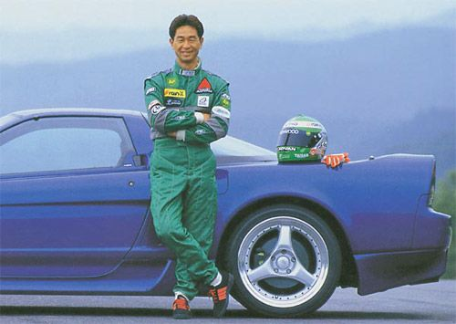
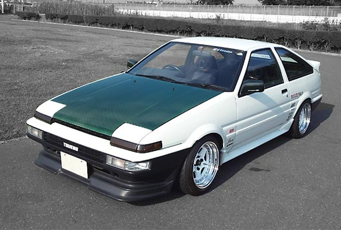
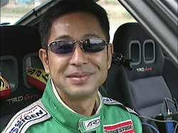

Keiichi már kezdő driftesként elhatározta, hogy sikeres szeretne lenni abban, amit csinál. Annak ellenére,
hogy anyagi helyzete miatt nehezen indult el pályafutása, már 1970-ben versenyezni kezdett, felhívva magára
a figyelmet tehetségével. A hóval borított Japán hegyek kanyarjaiban, Keiichi-nek lehetősége volt
bizonyítani egyedülálló képességeit. Úgy hírlik, hogy egy Japán Animében létezik egy Takumi nevű karakter,
amit róla mintáztak. Keiichi-t saját példaképe inspirálta, Kunimitsu Takahashi, egy volt versenyző, aki
által saját magát és az autóját is új szintre emelte a sportágban.
rengetegen a Drift Királyának emlegetik

A híres AE86
Keiichi 1987-ben filmre vették az AE86-osában. Pluspy néven fut a kis dokumentum film, ami klasszikusnak
számít a rajongók körében, és a mai drifteseknek is sok inspirációt nyújt.Kanyarodjunk vissza a már említett
Animéra. Nos, a 90-es években népszerű vált sorozat, ami Keiichi korai driftes éveire épül, ápolva a
hírnevét és átitatva a fiatal versenyző lázadó szellemével. Keiichi sosem vágyott a népszerűségre, ő mindig
is azt csinálta, amit a mai napig szeret. Egyszer így fogalmazott: „Nem azért driftelek, hogy keresztbe
mehessek, nem azért mert ez a leggyorsabb módja a kanyarok bevételének, hanem azért, mert ez a
legizgalmasabb.

pályafutása
A hatvanas éveiben járó Keiichi-nek illusztris versenyzői karrierje volt, több mint negyed évszázadon
keresztül, megjárta többek között az All Japan Touring Car Bajnokságot, a Toyota Cup és All Japan GT
Bajnokságokat.
Mégis, a Lemans-is 24 órás versenyre a legbüszkébb, 1995-ből. Valószínűleg a fiatal korában
szerzett éjszakai, utcai csapatások is hozzájárultak ahhoz, hogy megnyerje a versenyt, összetettben pedig
másodikként végezzen.Az évek alatt vezetett már Toyota Supra GT500-at, Porsche 911 GT1-et, Honda NSX
GT500-at. De ahogy folyamat hallatja, a kedvence az 1986-os Toyota AE86 volt. Egy 2012-es interjúban
áradozott a fantasztikus 1.8 literes, 180 lóerős motorról. Amit a drift rajongók köszönhetnek Keiichi-nek,
az a Drift 1 Grand Prix sorozat. Japánban indult Daijiro Inada vezényletével – aki az Option magazin és a
Tokiói Autószalon alapítója. A D1GP mára már egy nemzetközi sorozattá nőtte ki magát, hatalmas tömegeket
mozgatva meg, rengeteg híres pilótát kitermelve.
